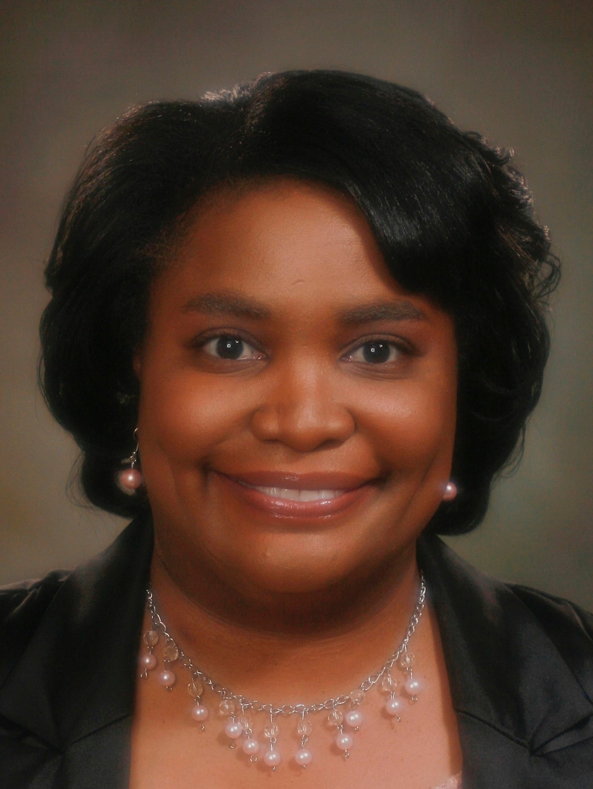

XIX Edition · Portugal
Ramos
2027
15–21 março · Felicia Barber, maestrina convidada internacional · USA
Desde 2005
Uma semana.
Muitas culturas.
Uma obra comum.
Ramos nasceu de uma ideia até então habitual sobretudo em orquestras e coros profissionais: trazer a Portugal maestros internacionais para trabalhar intensivamente com cantores e apresentar concertos de música sacra de elevada qualidade.
Todos os anos, na semana do Domingo de Ramos, cantores, coros e maestros encontram-se em Cascais e Lisboa para ensaios, masterclasses e concertos. O resultado é uma partilha de diferentes maneiras de ouvir, sentir e construir música.

International Guest Conductor · USA
Felicia
Barber
Felicia Barber dirige a 19.ª edição do Ramos Palm Sunday Festival. A página será atualizada com o repertório final, horários dos concertos e informação artística adicional à medida que forem confirmados.
Quero cantar no Ramos 2027Condições de participação
Escolha o seu caminho.
Cantor individual internacional
- Consultar o repertório da edição.
- Escolher duas obras e gravar um vídeo a cantar as obras completas.
- Enviar para info@voxlaci.com a ligação do vídeo e uma breve biografia musical.
- Aguardar a decisão da maestrina convidada.
Depois de aceite e paga a taxa Ramos de 295€, o participante recebe as partituras em PDF e os áudios de preparação. Viagem e alojamento não estão incluídos.
Cantor residente em Portugal
O processo de candidatura é idêntico: duas obras gravadas, breve biografia e decisão da direção artística. Os cantores aceites podem participar gratuitamente nos ensaios de preparação pré-festival.
Coro participante
Coros interessados podem propor uma participação coletiva. A organização confirma número de cantores, repertório, ensaios, refeições, transportes locais e condições específicas através de contacto direto.
Masterclass para maestros
- Enviar uma breve biografia musical para info@voxlaci.com.
- Aguardar resposta até 48 horas.
- Após aceitação, enviar comprovativo do pagamento no prazo indicado.
O programa trabalha vulnerabilidade, curiosidade, comunicação, escolha de repertório, direção em silêncio, feedback positivo e mentoria individual. As línguas de trabalho incluem português, inglês, francês, espanhol e italiano.
Chegada, alojamento e local
Os ensaios decorrem no Seminário Torre d’Águilha, São Domingos de Rana, Cascais, a cerca de 30 minutos de Lisboa. Cada participante trata da própria viagem e alojamento. É possível chegar de metro até Cais do Sodré e seguir de comboio para Cascais.
Pagamento
Associação Vox SDR
IBAN: PT50 0036 0196 9910 0035 3991 7
BIC/SWIFT: MPIOPTPL
Banco Montepio Geral
PayPal: info@voxlaci.com
MB Way: 938 407 985
Arquivo 2005–2028
Cada edição deixa uma voz.
Clique numa edição para descobrir o maestro, o programa e o repertório.

Fundador e Diretor Artístico
Myguel
Santos e Castro
Iniciou os estudos musicais aos sete anos e começou a ensinar música aos dezassete. Estudou Direção Coral na Academia de Amadores de Música de Lisboa e participou em workshops e masterclasses de direção coral, orquestra e técnica vocal em Portugal e no estrangeiro.
O seu trabalho coral levou-o a França, México, Japão, Estados Unidos e Estónia, além de projetos para rádio, televisão e cinema. É o fundador de VoxLaci e o diretor artístico do Ramos Palm Sunday Festival.
Ramos 2027